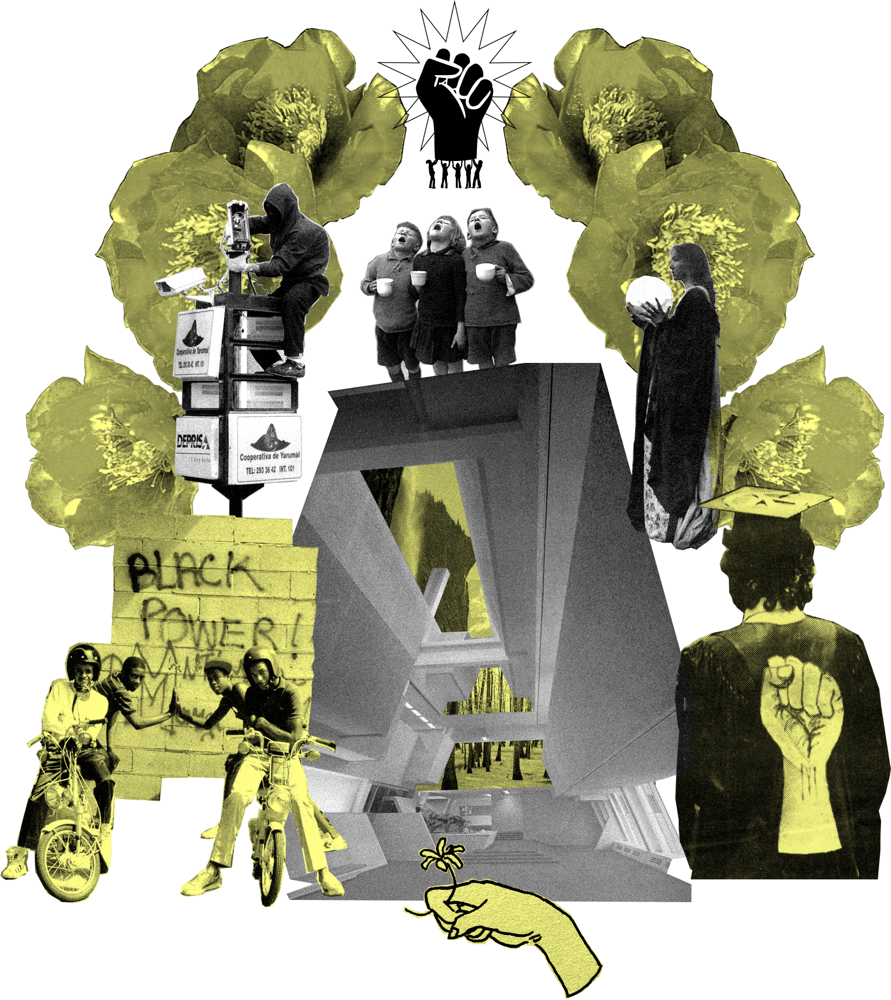

People
Power

A Future Powered By The People
The people can create radical new models of direct, pure democracy today, utilizing a hands-on approach to an autonomous form of government for the future.
…collective planning is the end of political parties and any sort of vertical or asymmetrical political power. Politics will be horizontal in a way that we cannot even comprehend right now, where every individual feels the power of their own autonomy in addition to collective power.… Collective consciousness will be the guiding force of direct democracy… — Jason Killinger
…government is important, it’s essential in that we need it to function for us. If it’s not functioning for us then we need to start over. We should be able to.… that would be great if we just made quicker decisions on things. You’re fucking up, you’re out. Why are we letting this go on for so long because we have a predetermined date of when we need to change things. If everyone agrees that we need to change it, change it… — Nicole Rodill
…the potential of the new world is that we will see another type of governance because we have true democracy… — Dr. Christina Harrington
…when talking about how we self-govern in the future, we need to realize that we need to openly communicate with each other about how to distribute resources more efficiently. If we take a more ethical and efficient approach, we’re going to see material conditions improve very quickly for a lot of different people… — Jeanne Laïka
…when people know you and are invested in your life in more than just a tangential way, they support you and they support what you’re trying to do… — Katie Hinchey-Wise, MSc
…people are going to be freer to determine what they would like to do to contribute to things.… It’s not whether it’s about being marketable or not, is it fulfilling people? That’s something I would like to see more of, especially if people are working less… — Jeanne Laïka
…you’re a person who has ‘power’ to contribute to the community, to make sure the community’s taken care of, but you’re not really able to do anything. So that system is there, we’re just not using it effectively. So if you have that same thing where you say this is your ten-block radius and these are the three ‘leaders’ of that ten-block radius. You’re going to make sure everything is accounted for. You’re going to make sure kids are receiving education, there’s health, there’s food, all of those things are happening. Yeah, there’s a bigger, broader body that’s helping support it, but those people are going to oversee and make sure that the ten-block radius is happy, healthy, comfortable.… their sole job is to make sure everyone’s doing good in that ten-block radius: checking in on people, making sure that everybody’s got food… — Nicole Rodill
…with something like municipalism, you form cooperatives to govern yourselves and to distribute resources effectively. In some ways, I feel like we are better set up to achieve something like that nowadays as compared to 1920’s Spain where they tried this because we can communicate so much more easily with one another. There are ways to get these ideas across where we don’t need borders to delineate that, and we aren’t cut off from others. You don’t have to physically amass everyone together to vote things in or discuss things. There’s a more efficient way of putting people in contact with one another for decision making… — Jeanne Laïka
…sitting down and learning about shit that’s not an Instagram story is incredibly important for people… — Katie Hinchey-Wise, MSc
…we had laws and regulation to hold networks accountable.… We need a version for the internet. How do we prevent disinformation from going viral? Networks need to be arbiters of truth… — Sameer Soleja
…if there’s a time that we (and I’m speaking for the reservations that are poverty stricken) are financially stable, have equitable structures, and can run as a sovereign nation as we should and can have these technologies. I wish everyone in my classroom could have a tablet. I want them to have apps like everybody else. I want them to have their own Native American games that they play…I want (my student’s) phone to be capable of having Native American languages and fonts… — Sadie Red Wing
…there’s a huge groundswell of Indigenous people on Instagram who are talking about Native lands, who are talking about Indigenous people taking up outdoor space, who are visual communicators that are showing pictures of all the Indigenous communities all over the world, introducing each other to what other Indigenous communities look like, because we never see ourselves reflected back in those environments… — Nicole Rodill
…we continue to pull the thread. Delete Facebook and delete your account. Tell your friends why you are doing it. Both sides agree that they need to be accountable. People can agree on that right now… — Sameer Soleja
…(in the future,) I hope that my student will come into my classroom and put their feet up on the desk and not pay attention to me but hold in their hand a Native American comic book inside of a Native American graphic design history book… — Sadie Red Wing
…we should be looked at as, ‘you are the queen that built the land I am living in. You are the reason I have the shit that I have. You wonderful fucking being, you fucking rock…’ I see the Black picture like, ‘oh my god, look at that Black queen… she’s beautiful and thank you so much for your service to this fucking world.’ It should be a fucking overwhelming feeling of gratitude towards Black people and admiration because of our fucking strength… — Fawziyya Heart
…we already have some groups that are saying, here’s what liberation looks like whether they be Indigenous folks, whether they be queer and trans folks, Black folks, Latinx folks, they’ve already started to define what true liberation feels like. True liberation feels like resources being given to our communities at a proportional rate to what we need to survive. You have so many groups that have already started to define that without the government interceding. You’ve had people that, in just growing up where they grew up or where they’ve lived, have been able to say ‘I know what freedom looks like’ or what it should look like… — Dr. Christina Harrington
…if I’m talking to folks who ask me what they can do to help Native American designers I say ‘help us with our Repatriation Acts. Speak up for us when we can’t be there’… — Sadie Red Wing
…let’s get real: let’s get our bones out of museums and let’s bury them back in their tribal communities… — Sadie Red Wing
…if we’re talking generations from now, learning about these power structures that have been put in place that have destroyed Indigenous people, those generations, whether they are white, brown, Indian, whatever, it doesn’t matter: they will know that story. And that story will be part of them. They will understand that the land they are on is where their ancestors settled, it’s not their creator story that they’re living in. It’s someone else’s creator story. When you have that knowledge, you impart that into the world. So technology will reflect that, art will reflect that, everything will reflect that from all peoples, not just Indigenous peoples, because everyone will have that information. Right now, everything is set up for white power structures. Even Black and brown people are subservient to these white structures. How many people of color adjust the way they speak for the white office, for their white boss to approve of them? All of these things that we adjust for white people. If everyone knew creator stories, if everyone knew what land they were on, we wouldn’t have to adjust for anybody, we would all have that information… — Nicole Rodill
…what do I see in the future? I hope that people can hear, or get an idea or sense of what I mean when I say that colonization affects us in our daily tasks.… I always get upset that people like to throw this word decolonization around, but people forget that there’s so much research on decolonization here in America and it affects the Native American demographic, but a lot of the times they’re using the word decolonization as a verb to change the structures and you have to be careful… — Sadie Red Wing
…If my neighborhood, Brooklyn, was radically decolonized? I think there would be a lot of female leadership. Decolonization means the extermination of the patriarchy in the full concept of governing, of ownership. I think there would be predominantly female leadership just because most Indigenous communities prior to colonization had, if not female leadership, women who were the decision-makers choosing who was going to be the leader. There would probably be a lot more agricultural support systems, community gardens, and rooftop gardens. A huge part of Indigenous culture, obviously, is food sovereignty. If we were to decolonize Brooklyn, there would be orange trees or apple trees that people could go grab fruit off of.… In true Indigenous lands, you’re always giving thanks to Mother Earth, and Mother Earth is always providing for you, you are sharing the goodness of Mother Earth with your community at all times. If you are fortunate enough to be able to go foraging for the day, you forage for yourself and you forage for your neighbor, and that’s Indigenous community-building and community care… — Nicole Rodill
…you can better incorporate those voices who have been disenfranchised, and in fact you can focus those voices above those who have had power.… There are plenty of Black and brown people who know what’s wrong with our system and know how to fix it.… A white nonprofit is not going to fix the situation… — Jeanne Laïka
…I would hope that in the future there will be more design attention in community-building and invention, swapping out the word ‘design’ with ‘invent,’ and getting creative. We’re lacking a lot of opportunity and a lot of that is because people don’t know our culture… — Sadie Red Wing
…it became clear that we need more goods to be produced in the U.S. instead of relying on foreign manufactures. This way when another crisis happens, we are not scrambling for essential supplies and goods… — Valerie Frolova
…we really have to reconsider the purpose of politicians… — Dr. Christina Harrington
…we need regular people to run and get elected to office… — Marion Leary
…an ideal world recenters power around people… — Jeanne Laïka
…self-reflection would help with racism. Racism is so basic. It’s for basic bitches… If you go a little deeper with yourself and give yourself some depth you’ll realize, ‘come on bruh, you’re still on that?’… — Fawziyya Heart
…if you’re operating from a place where your well-being is not separate from anyone else’s well-being, including the entire biome of the planet, if that’s where your mind’s at and that’s where you’re operating, then systemic racism doesn’t happen… — Jason Killinger
…this takes it down to a very small perspective, but in our current life, you’re working, you manage different people who have different personalities. Sometimes they don’t share with you all of their skills or their dreams, but you start to get a sense for where they would excel in projects and you redirect them towards those things. Or you have somebody who is really talented but they have a terrible personality, they get on everybody’s nerves, so you redirect them to be doing other things interacting with fewer people but they’re producing really great work over in this corner of the room. That comes from understanding your ten-block radius. Having a manager, having a grandma, having an aunty who’s looking out for everyone who knows and is checking in with people and families finding out how kids are doing, understanding their character, their personality traits, and can adjust… — Nicole Rodill
…no phobias or ableism in my utopia. Sexism, transphobia — in my utopia we would all be caring for each other regardless… — Anonymous
…in utopian futures we think that there is an existence of Black and brown bodies, queer and trans bodies, and just the larger society at whole where everyone respects everyone in harmonious living… — Dr. Christina Harrington
…it just has to be a mental transformation of how Black people are viewed… The future for Black people should be more of an appreciation and gratitude. Just a mindset… giving us some fucking money, paying us for the work that we’ve done, paying us for work that our families have done in this country. That would be a great start. And showing us some fucking gratitude and some fucking respect would be a great start… — Fawziyya Heart
…why do a lot of Native Americans rely on stereotypes when we could be using our own visual languages? So this concept of visual sovereignty comes up… — Sadie Red Wing
…the better world that I want to help create involves the people who previously had been doing harm. What we want is more common than you think… — Jason Killinger
…finding out the way these systems work gives us the tools to dismantle them. I learned this from the famous Audre Lorde essay, ‘the master’s tools will never dismantle the master’s house’, you have to absolutely see the house that you are in before you understand how to burn it down. Unless we see that all these systems cannot function without each other, that we cannot just look at any one system, we cannot just say ‘defund the police’ without explaining that we must also simultaneously be approaching mental health, approaching education… — Katie Hinchey-Wise, MSc
…I wish there would be no guns at all. You would need a very special clearance to have a gun… — Anonymous
…what do we do with war, with violence, what do we do with prison? What do we do with the not-pleasant stuff? We imagine a utopia, it doesn’t mean that those things disappear. Does war happen in the future?… The majority of the time it comes down to having mental health resources. In my ideal world, ‘it takes a village,’ ten-block concept, that means children are being looked after from a young age, they’re not getting treated poorly by aunts or uncles or parents which could potentially create that kind of hate and rage and anger that creates angry, evil adults. A prison system is not really necessary. You think of other countries, like Scandinavian countries, that have very chill prison systems without a lot of people in them. In our country, we talk about recidivism, but what was on the outside for them? What helped them? What resources did they have? Did they have jobs, did they have assistance? In the ‘it takes a village’ mindset, there would be the resources for them on the outside if they got into trouble… — Nicole Rodill
…in my utopian world, there’s no problem with waste management, police brutality, or food insecurity… — Valerie Frolova
…it will not be about starting a war or contributing to one, but it would be about figuring out the cost of the potential conflict and trying to address it with diplomacy, not violent intrusion… — Valerie Frolova
…police are not here to be your friends, they’re not here to help you. The police are here to get us in check and keep us in line. Teachers are here to help you, social workers are here to help you, doctors, nurses… — Katie Hinchey-Wise, MSc
…if you train people how to recognize and de-escalate conflict and how to work together, it’s going to be so much easier to deal with that rather than having to escalate a situation by forcing a police structure on that society… — Jeanne Laïka
…people can act really weird, but they’re just trying to get a need met.… You just need to find out what it is. Look at things without that kind of judgement… — Lara Durback
…people are being brought into new situations and new crossroads, and we have to give them really easy information to consume but that has been around for awhile… — Katie Hinchey-Wise, MSc
…in a utopia, there wouldn’t be that ghost wondering about others’ intentions for me or the more sinister work that people have to do for money at certain levels of desperation where they really exploit each other… — Lara Durback
…don’t be an asshole! You can do what you want to do as long as it doesn’t hurt other people.… Freedom and responsibility… — Dr. Kimia Pourrezaei
Next: Create a commons council